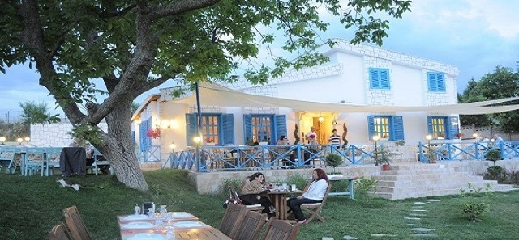
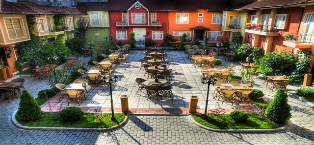

| Home | Local Dishes | Historical Places | Useful Links | About Me | Contact Me | Registration |
|
KABALKA  The best place to have breakfast in Lüleburgaz. MİYANSERA  A place well decorated in the city center. A well place with nice foods and plenty of drinks options. |
||||||